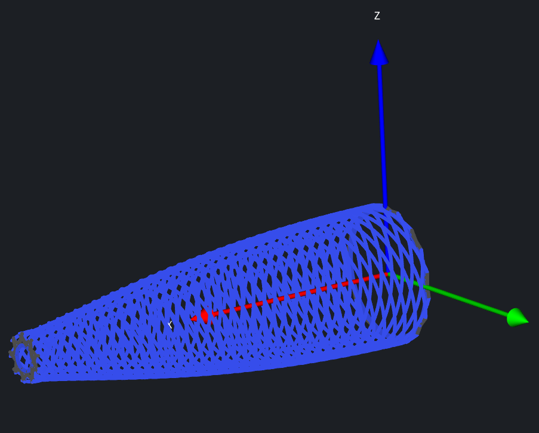

Projects
Contraption winder build + software
Filament winder in action

Plotted nosecone gcode
For my university rocket team, I built a heavily modified
version of Andrew Reilley's
Contraption filament winder as an Ender 3 conversion,
adding a fourth axis from the bed gantry, a huge gear reduction
replacing the belt drive to run large mandrels on a NEMA 17
instead of the designed NEMA 23, and some special configuration
of Marlin firmware to glue it all together. Since the associated
plotting software was written in TypeScript (eww) and doesn't
suppport non-cylindrical mandrels such as nosecones, I rewrote
and extended the
plotting code in Python. Overall the hardest technical
problem througout all of this has just been getting samples to
release from the mandrel, if you know a good mold release system
please contact me.
Code/programming
Some side projects from my coding days, sadly I shower too often to
make a career out of it. Besides, hardware is way more cool,
making real stuff >>> typing in the computer.
Pong, but with twice the paddles. WASD and arrow keys battle for
the best score defending a ball of increasing speed.
Covid-era Discord/Reddit bot that portrays your opponent as
a soyjak. Funniest program I have ever written.
Command line utility in C using ip geolocation and a weather API to
deliver weather data in text form for widgets.
Another utility in C that uses the Linux video API to get camera
data and make an estimate of the surrounding brightness, then
change the screen brightness to match.
Other projects
Placeholder div to add more projects (they exist just haven't been
properly documented. This website will be like 20 pages long one day.